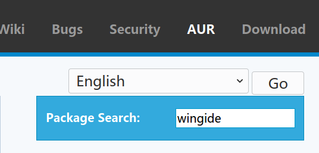
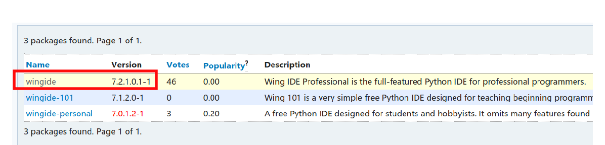
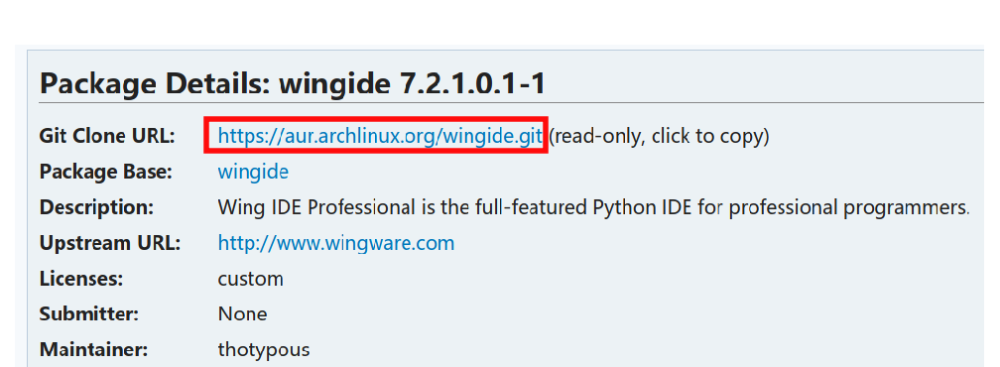

[Arch]-3-Arch如何安装软件
引言
这边文章介绍Arch几种软件安装方式，包管理软件Pacman以及Arch的灵魂AUR。
文章目录
0×1.如何使用Pacman
Pacman是Arch下非常好用的包管理软件，官方使用wiki文档请参考：Arch Pacman wiki
所有能够通过pacman下载安装，被纳入官方软件包列表的软件，都可以通过这个页面查找到：Arch Packages
所以，Arch上我们只需要知道要安装的软件包名称，然后通过pacman命令安装即可，下面总结出个人使用中最常用的几条命令：
#搜索并列出firefox开头的所有软件包的名称 qing@qingsword.com:~$ sudo pacman -Ss firefox #安装或者升级单个软件，例如安装火狐浏览器，如果已安装并且版本比较新则会被升级，如果已安装版本相同，在得到你的同意后，会重新安装 qing@qingsword.com:~$ sudo pacman -S firefox #安装或升级多个软件（用看空格分开每个软件包名称即可），例如火狐浏览器，火狐浏览器中文支持，Google浏览器 qing@qingsword.com:~$ sudo pacman -S firefox firefox-i18n-zh-cn chromium #升级整个系统，将会更新所有系统中安装的软件（这就是Arch强大的地方，基本上不需要重装系统） qing@qingsword.com:~$ sudo pacman -Syyu #查找系统中安装过的软件包，例如uGet，会列出所有名称包含uget的软件包 qing@qingsword.com:~$ sudo pacman -Qs uget #删除指定软件包，以及所有没有被其他已安装软件包使用的依赖关系，例如uget，如果有多个软件，用空格分隔 qing@qingsword.com:~$ sudo pacman -Rs uget
0×2.如何使用AUR
AUR是指Archlinux User-community Repository，也就是,Archlinux用户社区的软件库，他的由来是因为很多软件从git到编译到安装基本上都是相同的步骤，所以一部分十分聪明的人，将这个过程打包成了一个脚本，我们只需要git下来这个脚本，即可完成软件的自(wu)动(nao)化安装。
AUR官方网址是：AUR
这里有一篇很详细的文章介绍什么是AUR以及其中的原理：Archlinux的灵魂-PKGBUILD、AUR和ABS
所以，所有可以通过AUR官方链接查到的软件包，都可以使用下面这种方式来安装：
首先，从AUR页面搜索到需要安装的软件包的git链接，例如WingIDE，找到你要安装的版本，复制红框里面的git链接：
  #使用git克隆到本地 qing@qingsword.com:~$ git clone https://aur.archlinux.org/wingide.git #进入刚才克隆的目录 qing@qingsword.com:~$ cd wingide #使用makepkg命令，执行PKGBUILD脚本中的内容，生成一个文件名".xz"结尾的二进制安装文件 #也可以直接makepkg -si会自动安装上，不需要pacman了 qing@qingsword.com:~/wingide $ makepkg #使用pacman安装刚才生成的安装包 qing@qingsword.com:~/wingide $ sudo pacman -U wingide-7.2.1.0.1-1-x86_64.pkg.tar.xz
0×3.使用ArchLinux中文社区仓库
ArchLinux中文社区仓库的介绍请参考下面的连接：
https://www.archlinuxcn.org/archlinux-cn-repo-and-mirror/
#编辑pacman.conf qing@qingsword.com:~$ sudo vim /etc/pacman.conf #在内容最下面，加入下面的信息，考虑到国内访问速度，建议将阿里云镜像放在最前面 [archlinuxcn] Server = https://mirrors.aliyun.com/archlinuxcn/$arch Server = https://mirrors.tuna.tsinghua.edu.cn/archlinuxcn/$arch Server = https://mirrors.ustc.edu.cn/archlinuxcn/$arch Server = https://repo.archlinuxcn.org/$arch #更新仓库列表 qing@qingsword.com:~$ sudo pacman -S archlinuxcn-keyring qing@qingsword.com:~$ sudo pacman-key --init qing@qingsword.com:~$ sudo pacman-key --populate archlinux qing@qingsword.com:~$ sudo pacman-key --populate archlinuxcn qing@qingsword.com:~$ sudo pacman -Syy #测试从archlinuxcn安装AUR包管理器yay qing@qingsword.com:~$ sudo pacman -S yay
0×4.使用AUR包管理器yay安装软件
yay不在Arch官方的仓库中，请参考本文第三部分，从ArchLinux中文社区仓库中下载安装yay。
在本文的第二部分，通过AUR安装软件的步骤有点麻烦，实际上还有一种简化的方法，通过yay一键安装AUR仓库中的软件，请看下面的实例：
#首先需要参考本文第二部分，通过AUR页面查找到我们需要安装的软件的name（本文图二），还是用wingide举例，首先查找到AUR中，我们想要安装的包的name为wingide #通过yay安装wingide qing@qingsword.com:~$ yay -S wingide #通过yay卸载刚才安装的wingide qing@qingsword.com:~$ yay -R wingide
上面就是Arch安装和删除软件的常规操作，基本上官方源配合AUR能够满足日常需求。